№25 Двуликая
Типа сложное задание окда (нет), в котором два прототипа - маски и делители. Прототип с маской - изи балл, с делителями сильно сложнее. В любом из них от вас потребуется написать маленькую по объему программку.
Оцените иронию
Какой из прототипов попадется конкретно вам - чистая удача. Можете с собой на экзамен заячью лапку взять, на всякий случай. Также, в 2026 особых изменений нет.
Разборы
Пример 1)
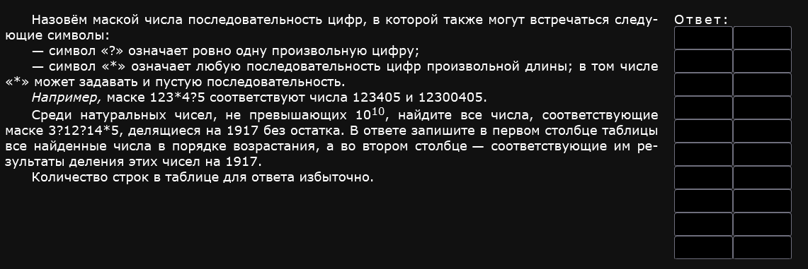
Под это задание как будто специально существует библиотека fnmatch и одноименная функция из нее (встроенная в питон). Она-то нам и поможет.
Функция fnmatch имеет такой же синтаксис как в задании (с ? и *), возвращает True, если переданная на вход строка подходит под паттерн, False если не подходит. Наша задача просто перебрать все варианты.
За подробностями: документация fnmatch.
Для упрощения задачи компу нужно указать шаг в цикле такой же, как в условии: ”… делящиеся на 1917 без остатка”.
Тяжелая вторая часть инфы, понимаю.
Ответ:
351261495 183235
3212614035 1675855
3412614645 1780185
3712414275 1936575
3912414885 2040905
Пример 2)
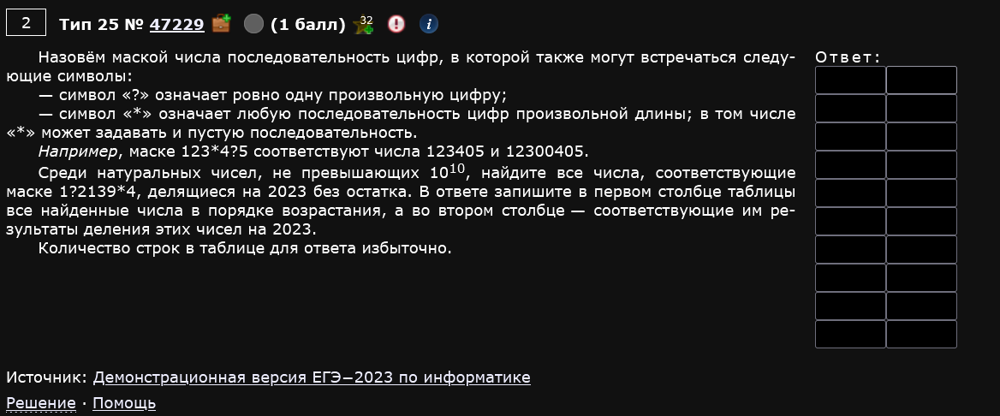
Все точно также.
Ответ:
162139404 80148
1321399324 653188
1421396214 702618
1521393104 752048
Пример 3)
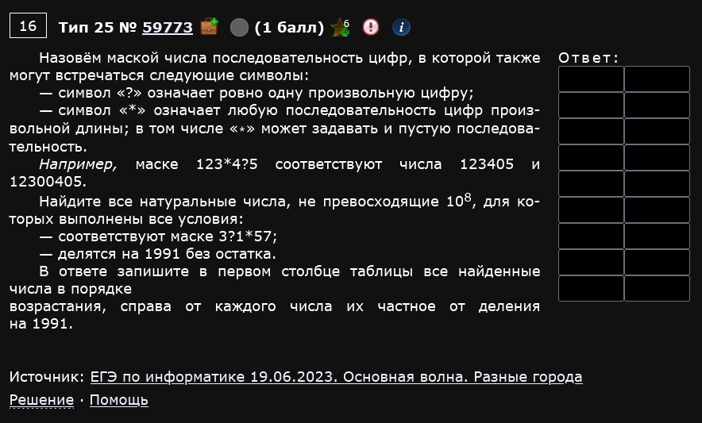
Ответ:
30117857 15127
31113357 15627
32108857 16127
33104357 16627
Этот прототип не отличается вариативностью в официальных источниках. Перейдем к другому прототипу.
Пример 4)
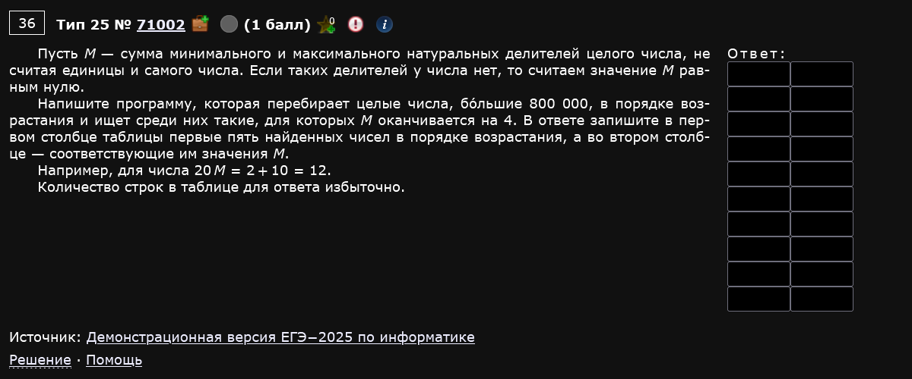
Давайте вчитаемся в условие. Надобна, чтобы перебор начинался с определенного заданного числа, чтобы мы вообще нашли делители, чтобы М оканчивалось на 4 и чтобы таких вот М-ок с их числами было 5.
Разобьем на отдельные элементы.
- У нас будет счетчик (ниже по коду это
k), который будет считать сколько удовлетворяющих значений М уже есть. Если 5 - вырубаем. - У нас будет начальное число, с которого мы стартанем наш поиск делителей (ниже по коду это
i). - Нам нужно как-то проверять условия, которые описаны выше в том числе и сколько вообще делителей у числа. Может оно простое, а мы не в курсе. Для этого предлагаю организовать не список, а множество
set(). Если не вдаваться в детали, то в этой задаче такой выбор обусловлен большим объемом обработки данных. В этом вопросеset()быстрее обычного списка.
Основа - это поиск делителей заданного числа. Можете загуглить, что для оптимизации этой задачи используются квадратные корни. А решается она простым перебором всех чисел до квадратного корня исходного (а если хорошо подумать, то до корня n-ной степени, но не суть).
Т.е. вот так:
for d in range (2, round(i ** 0,5) + 1):
if i % d == 0:Условия наши выглядят так:
- Если число имеет больше, чем 1 делитель из нашего рассматриваемого диапазона (т.е. учитывая, что единица осталась далеко позади заданного 800000), то тогда можно реализовывать М.
- Если М оканчивается на 4 делается стандартно. Т.е.
if m % 10 == 4.
Почему мы добавляем и d, и i // d в массив divs? Мы добавляем оба числа (d и i // d), потому что делители всегда идут парами. Если d является делителем числа i, то i // d тоже является делителем.
Как работают делители?
Когда мы ищем делители числа i, мы перебираем d только до sqrt(i), а второй делитель получается автоматически как i // d.
Пример: число 100
Все делители числа 100 (без 1 и 100):
2, 4, 5, 10, 20, 25, 50
Если мы перебираем d до sqrt(100) = 10, то:
d | i // d |
|---|---|
2 | 100 // 2 = 50 |
4 | 100 // 4 = 25 |
5 | 100 // 5 = 20 |
Таким образом, мы находим сразу два делителя за одну итерацию.
Ответ:
800004 400004
800009 114294
800013 266674
800024 400014
800033 61554
Пример 5)
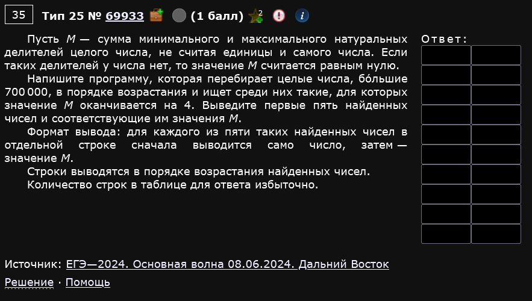
Все тоже самое, однако теперь мы начинаем не с 800 000, а с 700 000.
Ответ:
700004 350004
700009 41194
700023 233344
700024 350014
700044 350024
Пример 6)
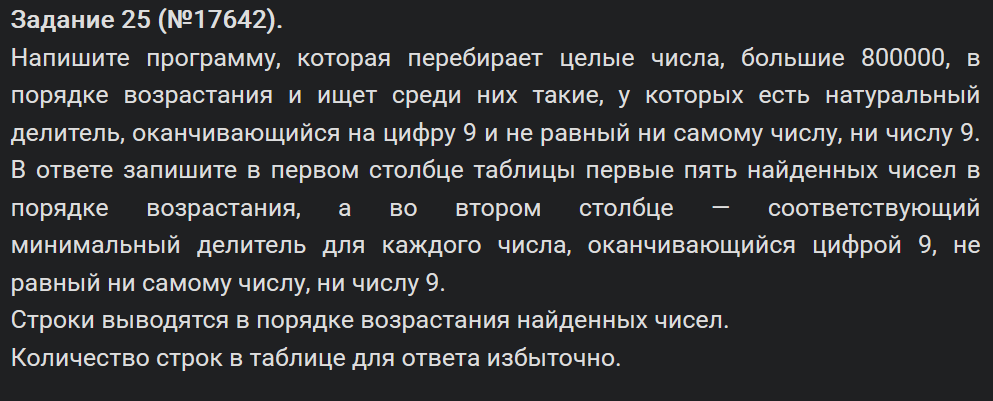
Вот тут уже поинтереснее.
Условие поменялось. Теперь нам нужно проверять на что оканчивается делитель и также проверять не равен ли он определенным значениям. Изменится только середина программы, начало и конец останутся такими же.
Ответ:
800001 309
800003 47059
800004 409
800006 269
800007 39
Пример 7
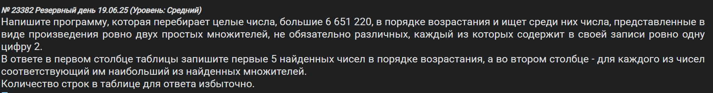
Новый прототип, новые условия. Теперь нам нужны числа, которые являются произведением ровно двух простых множителей, причём каждый из них должен содержать в своей записи ровно одну цифру 2. Множители при этом не обязательно различные — т.е. число вида p² тоже подходит.
В коде два решения. Первое (закомментированное) - лобовое: отдельная функция is_prime для проверки простоты и отдельная count_digit_2 для подсчёта двоек в записи числа. Работает, но многословно.
Второе решение — элегантнее. Главная фишка в строчке if len(divs) == 2. Вспоминаем: мы перебираем делители только до √i, добавляя в список сразу оба — и d, и i // d. Если в итоге в divs ровно два элемента, это значит, что у числа ровно одна пара делителей (помимо 1 и самого числа). А это в точности означает, что число — произведение двух простых. Никакой отдельной функции is_prime не нужно - условие len(divs) == 2 уже гарантирует простоту обоих.
Важный момент: здесь используется список [], а не set() как в предыдущих примерах. Это принципиально. Если i = p² (квадрат простого), то d и i // d — одно и то же число. В set() дубликаты не хранятся, и мы бы получили len == 1 вместо 2, и такое число пропустили бы. Список честно хранит оба вхождения, поэтому первый найденный ответ 6 651 241 = 2579² корректно попадает в результат.
Строчка if divs[0] * divs[1] == i формально всегда истинна при таком способе поиска (мы же сами так и нашли делители), так что она ничего не фильтрует - просто лишняя проверка, можно было не писать.
6651241 2579
6651262 3325631
6651286 3325643
6651314 3325657
6651347 289189
Пример 8
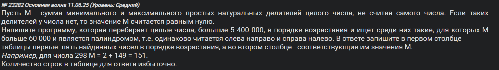
Снова прототип с делителями, но условие на М усложнилось сразу в двух местах: теперь нас интересуют только простые делители, и М должно быть палиндромом (читается одинаково слева направо и справа налево) и при этом больше 60 000.
Возвращаемся к set() — квадраты простых нам здесь не нужны отдельно, а скорость важна. Структура та же, что в примерах 4–6: while по счётчику, внутри собираем делители до √i. Но теперь добавляем в divs только те, которые простые — для этого нужна вспомогательная функция is_prime.
Проверка палиндрома делается элегантно: str(m) == str(m)[::-1]. Превращаем М в строку и сравниваем её с собой же, перевёрнутой ([::-1] — срез с шагом -1, т.е. разворот строки).
Ответ:
5400042 900009
5400420 90009
5400866 158851
5406116 1351531
5406420 90109
Пример 9
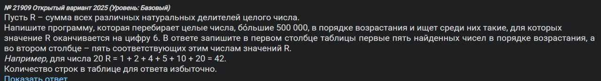
Снова знакомая структура, но условие стало другим. Теперь R - это сумма всех натуральных делителей числа (включая 1 и само число), и нам нужно, чтобы R оканчивалось на 6.
Главное отличие от предыдущих примеров: раньше мы в divs добавляли делители начиная с 2, игнорируя 1 и само число. Здесь же R считается по всем делителям без исключений, поэтому добавляем в divs сразу и 1, и i, а потом досыпаем остальные в цикле до √i как обычно.
Никакой is_prime не нужно — нам важны все делители, а не только простые. Проверка на окончание стандартная: r % 10 == 6.
Ответ:
500032 1070356
500035 606816
500039 501456
500050 949716
500052 1333696
Пример 10)
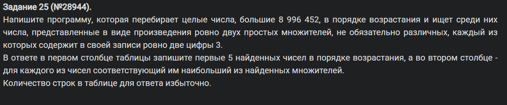
Пример 11)
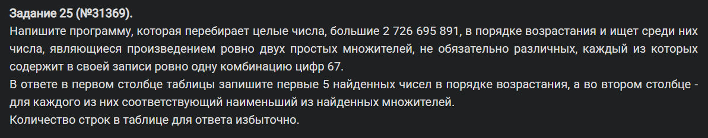
Пример 12)
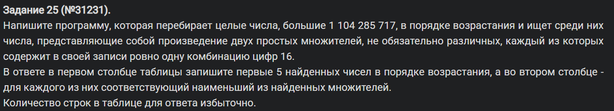
Пример 13)
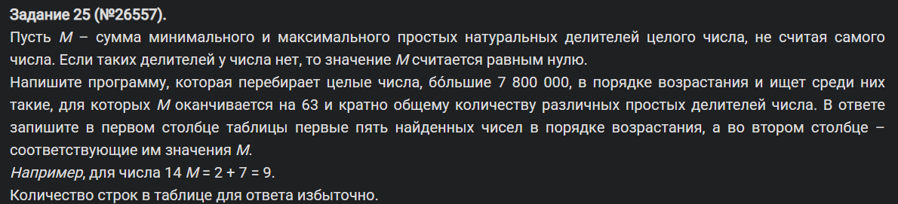